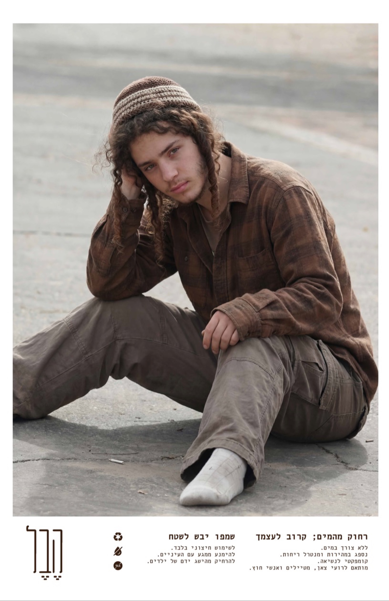
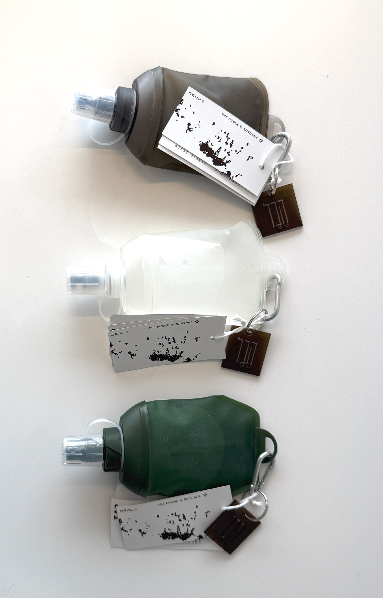
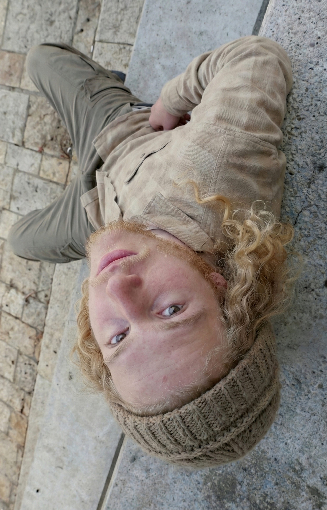
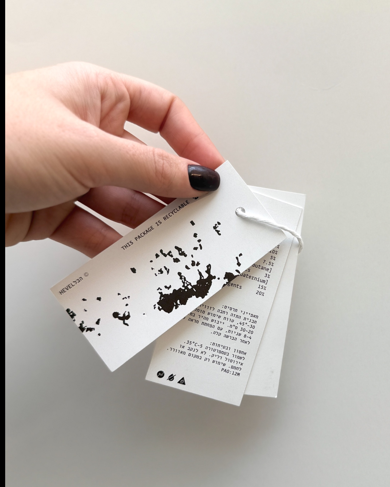
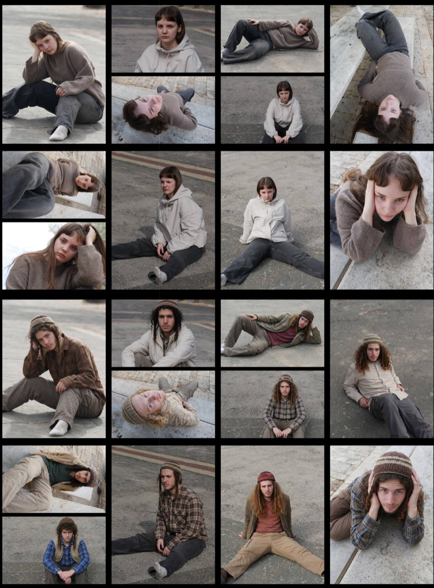

branding of a dry shampoo designed for hilltop youth. The Hilltop Youth (Noar HaGvaot) are groups of religious young people who establish isolated outposts in Judea and Samaria, maintaining a lifestyle centered around agriculture, shepherding, and a direct connection to the land.










